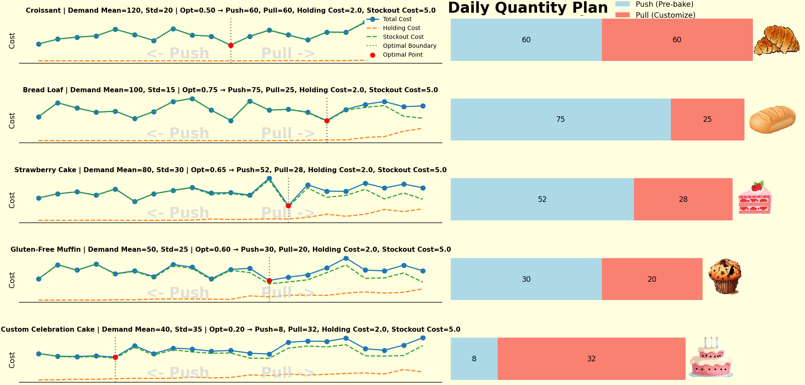

We faced this exact challenge:
✅ Some products have stable, predictable demand.
❓ Others are made-to-order with unpredictable preferences.
And almost all of them share common ingredients.
🔍 The Dilemma
• Pre-baking (Push) reduces preparation time, but can lead to 𝘄𝗮𝘀𝘁𝗲 if items aren't sold.
• On-demand customization (Pull) ensures freshness and personalization, but risks 𝘀𝘁𝗼𝗰𝗸𝗼𝘂𝘁𝘀 𝗼𝗿 𝗱𝗲𝗹𝗮𝘆𝘀 if not prepared in time.
We needed a way to:
• Reduce spoilage,
• Avoid losing customers due to delays,
• And make the most of our limited kitchen capacity.
🧠 The Approach: Segment by Demand Behavior
We looked at each product’s:
• 𝗔𝘃𝗲𝗿𝗮𝗴𝗲 𝗱𝗮𝗶𝗹𝘆 𝗱𝗲𝗺𝗮𝗻𝗱
• 𝗩𝗮𝗿𝗶𝗮𝗯𝗶𝗹𝗶𝘁𝘆 (𝘀𝘁𝗮𝗻𝗱𝗮𝗿𝗱 𝗱𝗲𝘃𝗶𝗮𝘁𝗶𝗼𝗻 / 𝗺𝗲𝗮𝗻)
• 𝗛𝗼𝗹𝗱𝗶𝗻𝗴 𝗰𝗼𝘀𝘁 (e.g., spoilage risk for pre-baked items)
• 𝗦𝘁𝗼𝗰𝗸𝗼𝘂𝘁 𝗰𝗼𝘀𝘁 (e.g., missed orders, customer dissatisfaction)
Then, we applied a 𝗽𝘂𝘀𝗵–𝗽𝘂𝗹𝗹 𝗯𝗼𝘂𝗻𝗱𝗮𝗿𝘆 𝘀𝗶𝗺𝘂𝗹𝗮𝘁𝗶𝗼𝗻:

💻 What We Simulated
• For each product, we varied how much of its expected demand to 𝗽𝗿𝗲-𝗽𝗿𝗼𝗱𝘂𝗰𝗲 (𝗽𝘂𝘀𝗵)
vs. how much to 𝗿𝗲𝘀𝗽𝗼𝗻𝗱 𝘁𝗼 𝗼𝗻 𝗱𝗲𝗺𝗮𝗻𝗱 (𝗽𝘂𝗹𝗹)
• We tracked 𝘁𝗼𝘁𝗮𝗹 𝗰𝗼𝘀𝘁 = holding cost + stockout cost
• We identified the "𝘀𝘄𝗲𝗲𝘁 𝘀𝗽𝗼𝘁" 𝗯𝗼𝘂𝗻𝗱𝗮𝗿𝘆 that minimizes total cost
🧪 For example:
A product with Mean=100, Std=20 showed optimal cost when we pre-made 45 units (push) and left 55 units for customization (pull).
✅ The Outcome
By simulating each product:
• 𝗖𝗿𝗼𝗶𝘀𝘀𝗮𝗻𝘁𝘀, 𝘀𝗮𝗻𝗱𝘄𝗶𝗰𝗵 𝗯𝗿𝗲𝗮𝗱 → pre-baked in batches (low variability → push)
• 𝗖𝘂𝘀𝘁𝗼𝗺 𝗰𝗮𝗸𝗲𝘀, 𝗲𝗴𝗴𝗹𝗲𝘀𝘀 𝗽𝗮𝘀𝘁𝗿𝗶𝗲𝘀, 𝗴𝗹𝘂𝘁𝗲𝗻-𝗳𝗿𝗲𝗲 𝗿𝗲𝗾𝘂𝗲𝘀𝘁𝘀 → base prepped, finished upon order (high variability → pull)
• 𝗦𝗽𝗲𝗰𝗶𝗮𝗹 𝗼𝗿𝗱𝗲𝗿𝘀 → fully pulled with short lead-time slots
💡 Key TakeawayThe right mix of 𝗽𝘂𝘀𝗵 𝘃𝘀. 𝗽𝘂𝗹𝗹 is not gut feeling—it's quantifiable.
Whether it’s food, fashion, or pharma—products with shared ingredients but variable final forms benefit immensely from 𝗱𝗲𝗹𝗮𝘆𝗲𝗱 𝗱𝗶𝗳𝗳𝗲𝗿𝗲𝗻𝘁𝗶𝗮𝘁𝗶𝗼𝗻 + 𝘀𝗶𝗺𝘂𝗹𝗮𝘁𝗶𝗼𝗻-𝗱𝗿𝗶𝘃𝗲𝗻 𝗽𝗹𝗮𝗻𝗻𝗶𝗻𝗴.
👉 Want to apply this to your business?
Let’s chat about 𝗱𝗲𝗺𝗮𝗻𝗱 𝗺𝗼𝗱𝗲𝗹𝗶𝗻𝗴 or 𝗽𝗼𝘀𝘁𝗽𝗼𝗻𝗲𝗺𝗲𝗻𝘁 𝘀𝘁𝗿𝗮𝘁𝗲𝗴𝗶𝗲𝘀.
#SupplyChain #PushPull #BakeryBusiness #Customization #Postponement #OperationsResearch #Simulation #DecisionMaking #InventoryOptimization